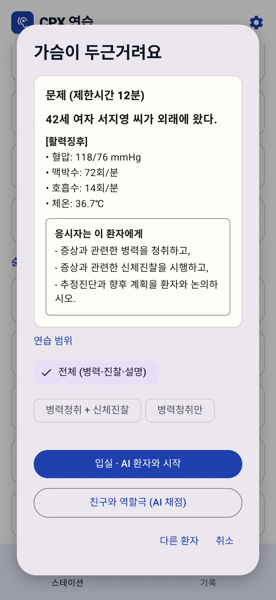
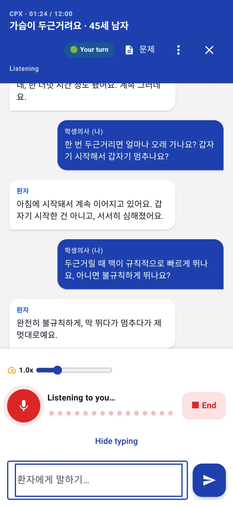
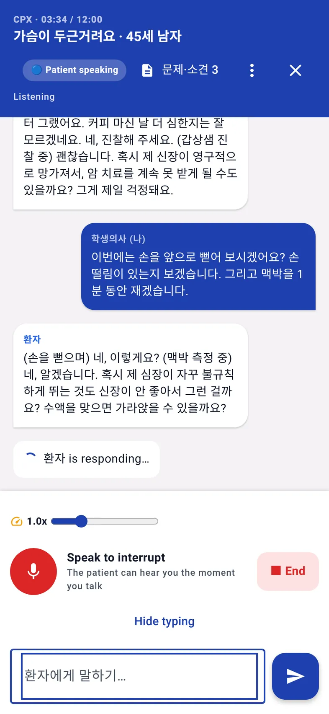
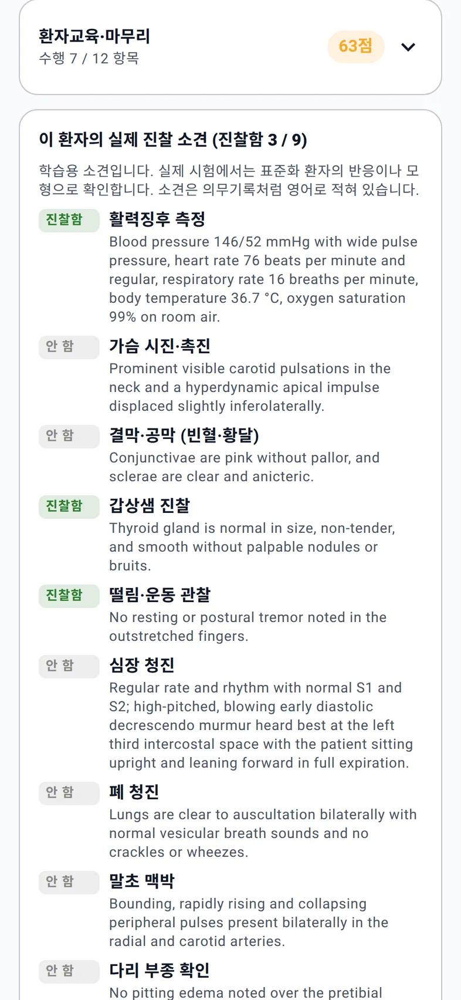
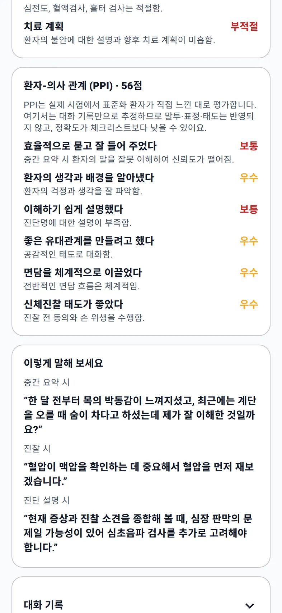

홈 › KMLE CPX 연습 › 한 스테이션 따라가기
실제 화면 · 한 스테이션
KMLE CPX AI 연습,
입실부터 결과표까지.
한국어 AI 모의환자와 문진하고, 진찰을 설명하고, 놓친 질문을 확인합니다. 실제 앱 화면으로 한 스테이션의 흐름을 따라가 보세요.


이 글의 순서
1. 시작: 모드 고르고 키 넣기
처음 열면 무엇을 연습할지 고른다. '한국 의사국시 CPX (한국어)'를 고르면 영어 연습 기능은 숨겨지고 CPX 화면만 남는다. 그다음 Google AI Studio에서 만든 무료 Gemini API 키를 붙여넣으면 끝이다. 계정 가입은 없다.


2. 입실: 12분짜리 진료
진찰 동작을 먼저 확인하려면 요골맥박 진찰 카드를, 질문을 준비하려면 두근거림 문진·진찰 정리를 함께 보세요.
'입실 · AI 환자와 시작'을 누르면 상단에 CPX · 경과 시간 / 12:00이 표시된다. 마이크로 말해도 되고 '⌨ Type instead'로 타이핑해도 된다. 환자는 물어본 것만 대답하고, 걱정이나 질문은 스스로 꺼낸다.
신체진찰은 말로 진행한다. "손을 앞으로 뻗어 보시겠어요? 손떨림이 있는지 보겠습니다"라고 하면 환자가 그에 맞게 반응하고, 상단 '문제·소견' 버튼의 숫자가 늘어나며 그 진찰에서 얻은 소견이 기록된다. 문제지는 진료 중에도 같은 버튼으로 다시 볼 수 있다.


12분이 다 되기 2분 전에는 시계가 노란색으로 바뀌고 '종료 2분 전'이 붙는다. 실전 모의고사에서는 12분에 자동으로 끝난다.
3. 결과표: 58점이 나온 이유
아래는 32세 여자, '목에서 맥박이 쿵쿵 뛴다'는 증례의 결과다. 병력청취에서 카페인, 갑상샘 증상, 가족력, 환자의 걱정까지 물었고, 갑상샘 촉진·손떨림·맥박을 진찰한 뒤 심전도와 갑상샘 검사를 계획했다. 그럴듯해 보이지만 결과는 58점이었다.


| 영역 (가중치) | 점수 |
|---|---|
| 면담 시작 (5%) | 50 |
| 병력청취 (30%) | 70 · 25개 중 17개 수행 |
| 신체진찰 (15%) | 61 · 9개 중 5개 수행 |
| 환자교육·마무리 (15%) | 63 · 12개 중 7개 수행 |
| 진단·계획 (의학 내용) (20%) | 38 |
| 환자-의사 관계 (PPI) (15%) | 56 |
총평은 이렇게 시작한다. "환자의 주 증상인 목의 박동감과 호흡곤란을 잘 청취하였으나, 신체진찰에서 혈압 측정을 누락하여 대동맥판막 폐쇄부전증의 특징인 넓은 맥압을 놓쳤습니다." 결과표에 공개된 진찰 소견을 보면 넓은 맥압, 심장 청진의 이완기 잡음, 말초 맥박의 도약맥처럼 진단으로 이어지는 단서가 진찰 항목마다 있었다. 두근거림을 부정맥과 갑상샘으로만 좁힌 순간 구조적 심질환을 놓친 셈이다.
4. 체크리스트: 놓친 항목과 모범 멘트
영역마다 항목별로 수행 · 부분 · 누락이 붙고, 수행한 항목에는 그 근거가 된 내 말이, 누락한 항목에는 "예:"로 시작하는 모범 멘트가 붙는다. 예를 들어 이번 증례에서는 이런 항목이 누락이었다.
- 다른 불편한 점이 있는지 확인하고 오늘 다룰 문제를 정한다 — 예: "그 밖에 또 불편하신 데는 없으세요?"
- 두근거릴 때의 박자를 손으로 두드려 보게 해 규칙성 확인 — 예: "두근거릴 때 박자를 손으로 한번 두드려 보시겠어요?"
- 멈추게 하는 방법(숨 참기, 찬물 마시기, 쉬기) — 예: "어떻게 하면 멈추나요? 숨을 참거나 하면 멎나요?"
중간 요약은 '부분'이었다. 환자가 하지 않은 말("커피 마신 날 더 심하다")을 요약에 넣었고, AI 환자가 그 자리에서 "커피 마신 날 더 심하다고 한 건 아닌데요"라고 바로잡았다. 결과표는 이것을 그대로 짚었다.
채점이 틀렸다고 생각하면 항목의 상태 표시를 눌러 고칠 수 있고, 점수가 다시 계산된다.

5. PPI 6개 영역과 "이렇게 말해 보세요"
환자-의사 관계(PPI) 6개 영역을 하나씩 평가하고 이유를 한 줄로 단다. 이번에는 '환자의 생각과 배경을 알아냈다', '좋은 유대관계', '면담을 체계적으로', '신체진찰 태도'가 우수, '효율적으로 묻고 잘 들어 주었다'와 '이해하기 쉽게 설명했다'가 보통이었다.
그 아래 '이렇게 말해 보세요'에는 이번 면담에서 실제로 바꿔 말하면 좋았을 문장이 상황별로 나온다.
- 중간 요약 시 — "한 달 전부터 목의 박동감이 느껴지셨고, 최근에는 계단을 오를 때 숨이 차다고 하셨는데 제가 잘 이해한 것일까요?"
- 진찰 시 — "혈압이 맥압을 확인하는 데 중요해서 혈압을 먼저 재보겠습니다."

홈 화면에 추가하기
- 아이폰·아이패드: Safari에서 bedsideenglish.github.io/app을 열고 공유 버튼 → '홈 화면에 추가'. 다음부터는 앱처럼 전체 화면으로 열린다.
- PC·Mac: Chrome이나 Edge 주소창의 설치 아이콘을 누르거나, 그냥 즐겨찾기에 넣어 둔다. 결과표처럼 긴 화면은 큰 화면에서 읽기 편하다.
- 안드로이드: Chrome 메뉴 → '홈 화면에 추가' 또는 '앱 설치'.
알아 둘 점
- 음성 진료 중에는 화면을 켜 두어야 한다. 웹 앱은 화면을 잠그거나 다른 앱으로 가면 실시간 대화가 일시정지된다.
- 본인 Gemini 키가 필요하다. 무료 등급으로 쓸 수 있지만, 무료 등급에서는 Google이 대화 내용을 서비스 개선에 쓸 수 있다. 실제 환자 정보나 개인 정보는 말하지 않는다. 사용량이 몰리는 시간에는 Google 쪽 사정으로 채점이 늦거나 실패할 수 있고, 대화는 저장되어 있으니 '채점 기록'에서 다시 채점하면 된다.
- 기록은 이 브라우저에만 저장된다. 계정이 없어서 다른 기기와 자동으로 동기화되지 않는다.
- 공식 채점표가 아니다. 체크리스트는 앱이 만든 연습용 기준이고, PPI는 말투·표정 없이 대화 기록만으로 추정한다. 친구와의 역할극을 함께 하는 것이 좋다.
함께 읽을 글
한국 CPX 트랙에서 연습하기
키 없이 공부 노트와 체험 환자를 먼저 볼 수 있다. AI 환자와 다양한 케이스를 연습하려면 본인의 Gemini 무료 키를 연결한다. 앱 이용료는 0원이며 Google 무료 등급의 한도가 적용된다.
다음 글: CPX 48개 임상표현 공부 노트 →